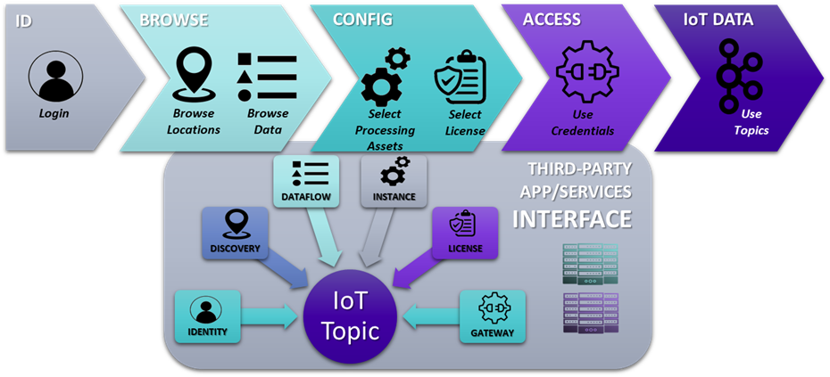

Introduction to the APIs for third-party CCAM application developpers
The 5GMETA platform provides various building blocks that developers can use to develop CCAM applications on top of 5GMETA. These building blocks include Identity, Discovery, Dataflow, Instance Type, License, Data Gateway which can be used as follows:
- Identity: Developers can use this building block to retrieve the OpenID configuration and request access tokens to authenticate API requests.
- Discovery: This building block enables developers to browse available MECs, locations, and tile coverage to select the desired locations.
- Dataflow: With this building block, developers can browse available data flows and datatypes that are available in the desired locations (MEC/ MECs) and select the ones that are relevant to their CCAM application and subscribe to the data flows that are most useful to their application, using the Platform APIs to consume data.
- Instance Type: 5GMETA platform enables developers to select the preferred instance type and deployment configuration for their CCAM application, determining how much computational power is needed for their application.
- License: Allows developers to select the preferred license for their CCAM application, ensuring they have the necessary rights to use the data and services provided by the platform.
- Data Gateway building block, developers can access the Platform APIs and deploy their CCAM application on top of the 5GMETA platform.
After all the necessary operations have been performed, the 5GMETA platform processes the request and provides the credentials needed to connect to the platform and Kafka topic to start consuming and building their application on top of 5GMETA.

Requirements for interfacing your application
5GMETA platform access
To interface your application, you need to have access to a running instance of the 5GMETA platform. During the 5GMETA project lifetime, 5GMETA platform can is available at http://5gmeta-platform.eu.
If you want to be granted an access, please contact a platform administrator.
Software requirements
- Ubuntu, preferrably 20.04
- python3
Extra packages to be installed
Then, you will need to install some dependencies (apt-get):
- python3-avro
- python3-confluent-kafka
- gstreamer1.0-plugins-bad (only if you are going to consume video)
- gstreamer1.0-libav (only if you are going to consume video)
- python3-gst-1.0 (only if you are going to consume video)
Also install with pip3:
- kafka-python
- numpy
- python-qpid-proton
- requests
- confluent-kafka (at least version 2.0.2)
- avro
- avro-python3
- fastavro
- avro_to_python
Also find easy installation for all the required packages(Be careful of your environment compatibility):
pip3 install -r examples/stream-data-gateway/requirements.txt